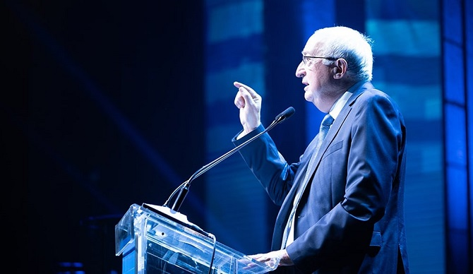
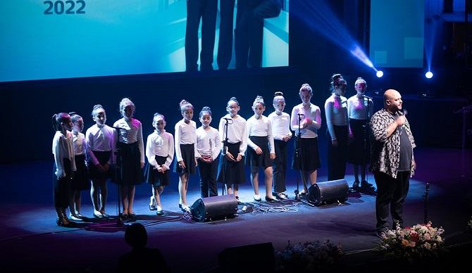

Graduates of 10 programs of the Mandel Foundation–Israel came together at the Jerusalem Theatre for a joint graduation ceremony
Sharon Wasserman, speaking on behalf of the graduates (Photo: Simanim)
Graduates of 10 programs of the Mandel Foundation–Israel gathered in Jerusalem in mid-November for a festive graduation ceremony, which was conducted in the presence of the board of trustees of the Jack, Joseph and Morton Mandel Foundation and the board of directors of the Parkwood Corporation, who had come to Israel for a week-long visit in which they gained a close-up view of the Mandel Foundation’s work in the country. The ceremony was attended by
Professor Jehuda Reinharz, president of the Jack, Joseph and Morton Mandel Foundation;
Stephen H. Hoffman, chairman of the Foundation;
Moshe Vigdor, director general of the Mandel Foundation–Israel;
Brigadier General Ofir Levius, head of the IDF Education and Youth Corps; and
Professor Manuel Trajtenberg, executive director of the Institute for National Security Studies.
“Throughout its existence, the Mandel Foundation has trained the very best people – in academia, the military, culture, and of course, first and foremost, education,” said
President Isaac Herzog to the graduates, in a specially recorded video address. “This was Mort Mandel’s vision: Excellence,” he said, wishing the graduates: “May you have every success; your success is the success of us all.”
The graduates of the Mandel Foundation–Israel, 2022 (Photo: Simanim)
“Each and every one of us graduates can look back on our time at Mandel and understand that something very special happened here, a kind of miracle, said Eiman Hawary, a graduate of Cohort 6 the Mandel Program for Regional Leadership in the North. “Suddenly, in the midst of the madness of everyday life, we were given the opportunity to stop for a moment and look inside ourselves; to understand our role in making our country a better place,” she continued.
The ceremony at the Jerusalem Theatre was a joint celebration for the graduates of 10 Mandel leadership programs in Israel: The Mandel School for Educational Leadership; four programs of the Mandel Leadership Institute (the Mandel Program for Leadership Development in the Haredi Community, the Mandel Youth Leadership Program, the Mandel Program for Leadership in Jewish Culture, and the Mandel IDF Educational Leadership Program); two programs of the Mandel Center for Leadership in the Negev (the Mandel Program for Cultural Leadership in the Negev and the Mandel Program for Regional Leadership in the Gaza Border Communities); and the three programs of the Mandel Center for Leadership in the North (the Mandel Program for Social Leadership in the North, the Mandel Program for Regional Leadership in the North, and the Mandel Program for Leadership for Public Service in the North).
Stephen Hoffman, chairman of the Jack, Joseph and Morton Mandel Foundation, addressed the graduating fellows and said: “Our founding chairman, Mort Mandel, set as our mission is investing in leaders who will change the world. We now welcome you to the ranks of these Mandel leaders and we eagerly await to see what you will do. Good luck!”
“One of the biggest surprises awaiting us during our studies here at Mandel,” said
Tehila Azulay-Shaul, graduate of Cohort 4 the Mandel Program for Cultural Leadership in the Negev, “and perhaps the greatest reward we received, was the special kind of interactive learning that was created here. Jews, Muslims, Druze, and Christians, from the north and the south, from all walks of Israeli life, all joined together. We argued, hugged, listened, and shared, and gradually we became a tight-knit social group that is almost a family.”
Yiftach Shavit and
Miriam Fink, representatives of the Mandel Graduate Unit, presented the Unit and the graduate community, which all new graduates of Mandel programs join upon the completion of their studies.

Professor Manuel Trajtenberg addresses the graduates (Photo: Simanim)
Professor Manuel Trajtenberg, executive director of the Institute for National Security Studies, congratulated the new graduates and spoke about the need for leadership in today’s Israel. “We need you now more than ever,” he said, “since the fissures in Israeli society have, regrettably, only grown wider… at a time when the challenges around us are becoming ever greater. You are graduates of an institution that is a standard-bearer for leadership. The people of Israel yearn for the fulfillment of the sage advice that was given to Moses by his father-in-law Jethro: ‘Seek you out from among the people capable men who fear God, men of truth who despise corruption.’ These are the leaders that the people of Israel need today, just as we did then.”
Speaking on behalf of the program graduates,
Sharon Wasserman, a graduate of Cohort 29 of the Mandel School for Educational Leadership, said: “The Mandel experience offered us a unique and safe space… in which to stop and explore and interpret our identity, and to be open to the possibility of change and renewal; to expand our perspective and possible worldviews, by studying and discussing the ideas of great thinkers, researchers, poets, policymakers, fieldworkers and more. Now, we are charged with the great responsibility of taking this formative new creation, this imagined reality we have developed, and transforming it – boldly, sensitively, empathically, humbly, and wisely – into action.”
The ceremony concluded with a moving performance of Ahuva Ozeri’s song “Me'alay D'mama” (Silence Above Me) byShai Tsabari, graduate of Cohort 5 of the Mandel Program for Leadership in Jewish Culture, who sang together with the Yeruham Youth Choir.

Shai Tsabari and the Yeruham Youth Choir (Photo: Simanim)

 Sharon Wasserman, speaking on behalf of the graduates (Photo: Simanim)
Sharon Wasserman, speaking on behalf of the graduates (Photo: Simanim) The graduates of the Mandel Foundation–Israel, 2022 (Photo: Simanim)
The graduates of the Mandel Foundation–Israel, 2022 (Photo: Simanim)


{kind=link}
{kind=link}
{kind=link}
{kind=link}
{kind=link}
{kind=link}
{kind=link}
{kind=link}
{kind=link}